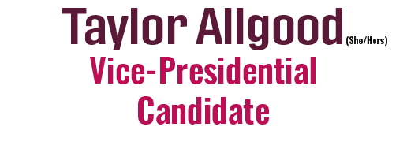
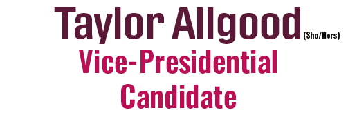

Student Government has been such a big part of my life and has given me so much experience in being a student leader from serving as the Director of City Relations my sophomore year, to my term as Treasurer of USG during the start of the pandemic, and in my current roles as Co-Chair of the Governmental Relations Committee and a Senator-At-Large. I’ve been able to work with so many amazing people to better the student experience, and I am more than ready to take on this new challenge and utilize everything that I have learned to bring more resources and opportunities for every student to be a #BolderBearcat.
This campaign is all about reconsidering what’s possible on our campus and pushing past our own experiences to create a UC that is more inclusive, more connected, and most importantly more bold! (Yes, I know that’s not grammatically correct leave me alone!)
You can learn more about our campaign by following us on Instagram @votesmithermanmartinez and using our linktree to access the rest of our content!
 

I remember my first Student Government meeting my 2nd year where I was a Legislative Aid for the Campus Life Committee. From there I grew to be a Senator for the College of Engineering and Applied Science Tribunal, and now my current position as a Senator-At-Large. Working alongside some amazing leaders has truly made me look at myself in a whole new light.
I know I am ready to take this position in stride and create a UC where there are resources and opportunities for every student to be a #BolderBearcat.
Our campaign is really about looking at what we originally thought was possible, and then taking it further to create a Bolder UC.
Learn more about our campaign by following us on instagram @votesmithermanmartinez and use the linktree to see what we have so far!
We have a long way to go on the Bolder Bearcats campaign trail so make sure to keep up to see what we have to offer!